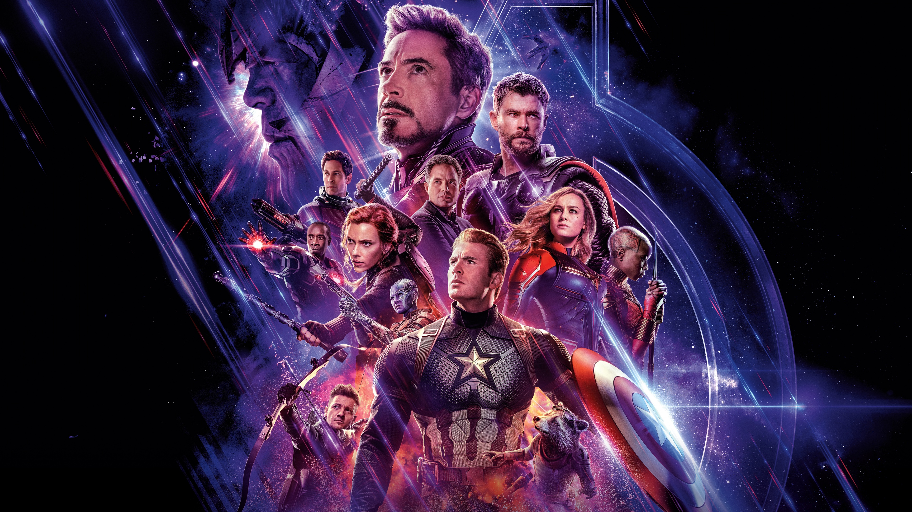

Released in 2019, Avengers: Endgame is a superhero film produced by Marvel Studios and directed by Anthony and Joe Russo. It is one of the most significant films in the Marvel Cinematic Universe (MCU) and serves as a direct continuation of the events of Avengers: Infinity War. The film follows the remaining Avengers and their allies as they struggle to cope with the devastating consequences of Thanos’ actions. As they search for a way to reverse the destruction caused by the Infinity Stones, the heroes are forced to confront their past, make difficult sacrifices, and work together once again.
After Thanos eliminates half of all life across the universe using the Infinity Stones, the remaining Avengers are left to cope with the devastating consequences of their defeat. Five years later, they discover a potential way to reverse Thanos’ actions and bring back those who disappeared. With the fate of the universe at stake, the Avengers reunite for one final mission that takes them into the past to retrieve the Infinity Stones. However, their journey is filled with unexpected challenges and difficult sacrifices. As they attempt to restore what was lost, the Avengers must once again face Thanos and fight to protect the future of the universe.
Avengers: Endgame ranks among my favorite films because it gathers numerous characters and narratives from earlier Marvel releases. I appreciated the action sequences, emotional beats, and particularly the final clash. The picture also offers meaningful resolutions for several key figures. Overall, I found the experience thrilling, memorable, and pleasant to view.
Avengers: Endgame Website